We present NOVA3R, an effective approach for non-pixel-aligned 3D reconstruction from a set of unposed images, in a feed-forward manner. Unlike pixel-aligned methods that tie geometry to per-ray predictions, our formulation learns a global, view-agnostic scene representation that decouples reconstruction from pixel alignment. This addresses two key limitations in pixel-aligned 3D: (1) it recovers both visible and invisible points with a complete scene representation, and (2) it produces physically plausible geometry with fewer duplicated structures in overlapping regions. To achieve this, we introduce a scene-token mechanism that aggregates information across unposed images and a diffusion-based 3D decoder that reconstructs complete, non–pixel-aligned point clouds. Extensive experiments on both scene-level and object-level datasets demonstrate that NOVA3R outperforms state-of-the-art methods in terms of reconstruction accuracy and completeness.
Compared with pixel-aligned reconstruction models like VGGT, NOVA3R can reconstruct both visible and occluded regions.
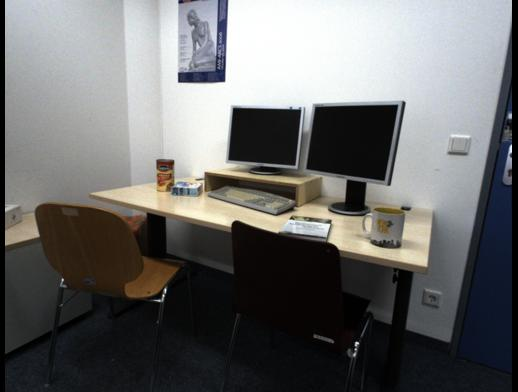
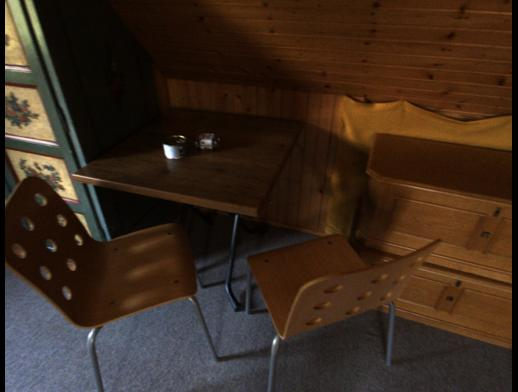
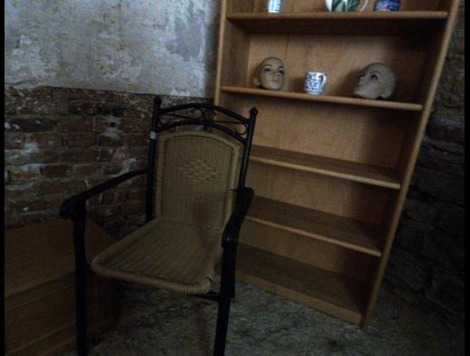
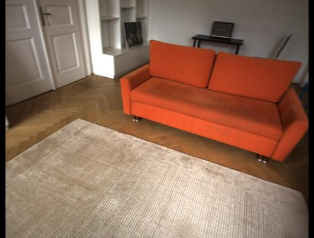
NOVA3R Pipeline: Stage 1: Learn latent scene tokens from complete point clouds using a flow-matching autoencoder. Stage 2: Map multi-view images into the same latent space via an image encoder with learnable initial tokens, and train the encoder with frozen decoder weights from stage 1 using flow-matching loss.
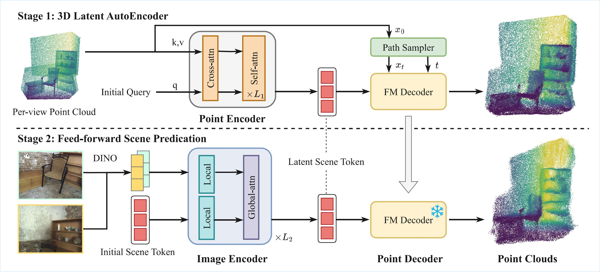
Given uncalibrated multi-view inputs, NOVA3R learns a global scene representation that integrates cross-view information to recover visible and occluded geometry. The resulting complete 3D reconstruction captures full scene structure and supports downstream tasks including robotics and scene understanding.
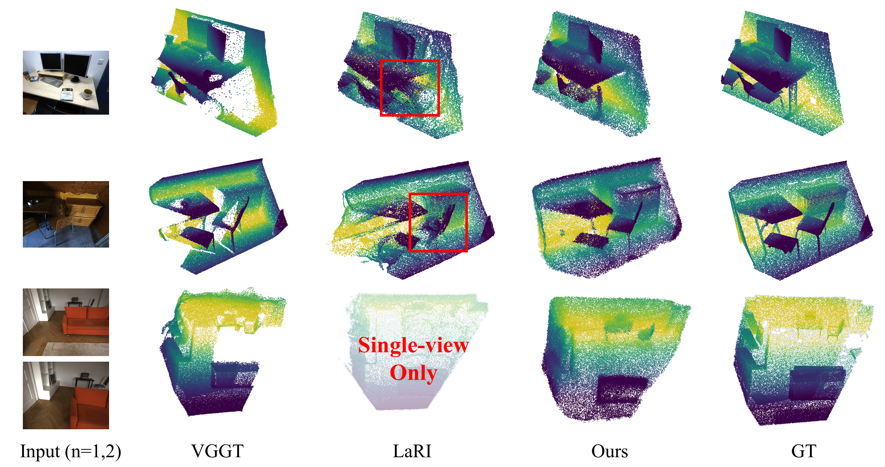
By using a non-pixel-aligned formulation, NOVA3R learns a globally consistent point distribution, yielding non-overlapping reconstructions with uniform density. Pixel-aligned approaches, in contrast, tend to introduce duplicated and misaligned points in overlapping areas.
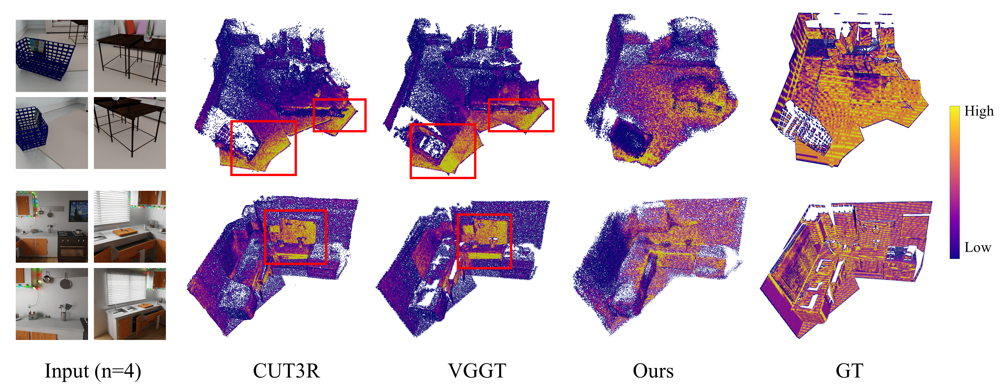
We integrate NOVA3R into the TRELLIS pipeline by replacing Stage-1 active voxel prediction with NOVA3R's non-pixel-aligned point cloud output. This simple substitution enables a pretrained object-centric TRELLIS model to generalize to scene-level reconstruction, while reusing the unchanged Stage-2 decoder to generate meshes, 3DGS, and radiance fields.
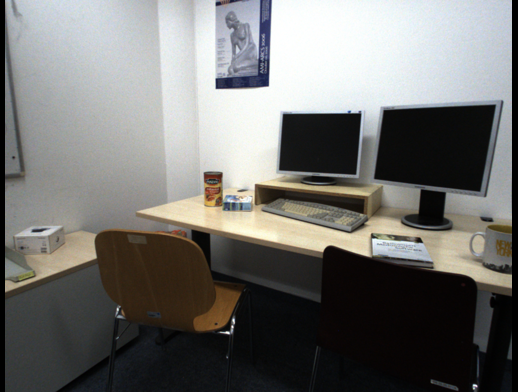
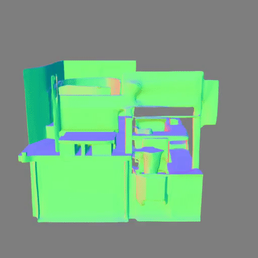
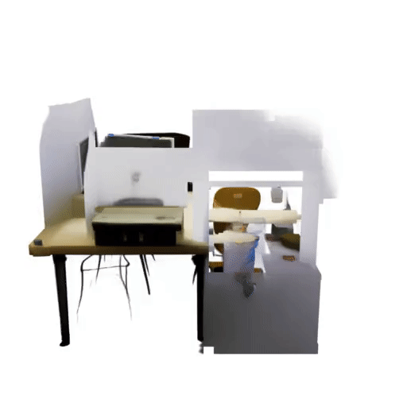
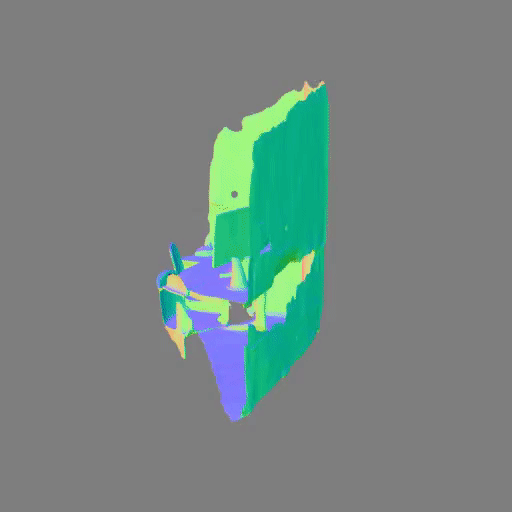
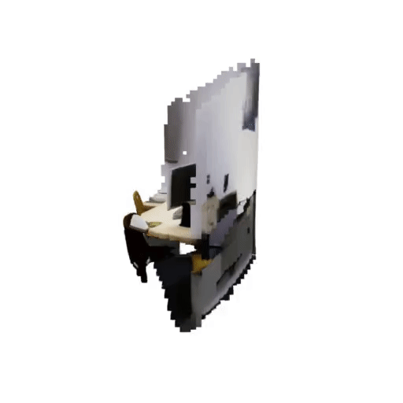
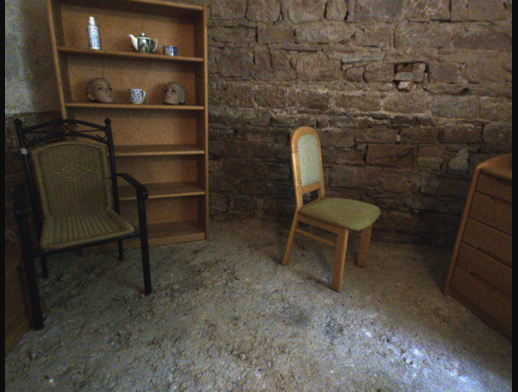
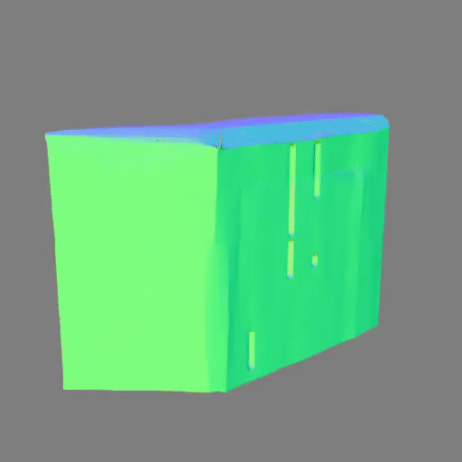
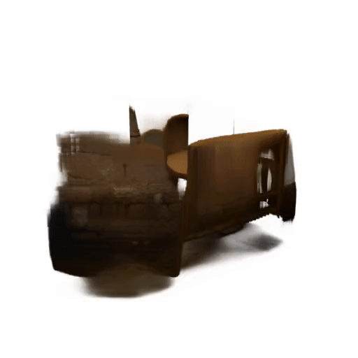
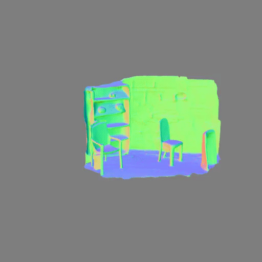
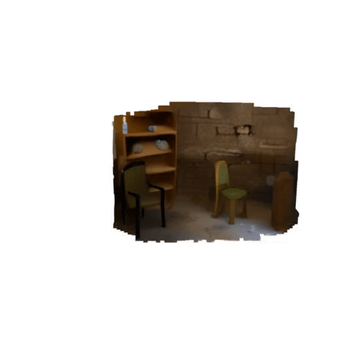
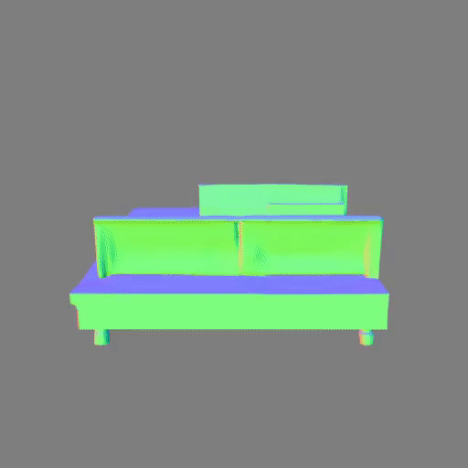
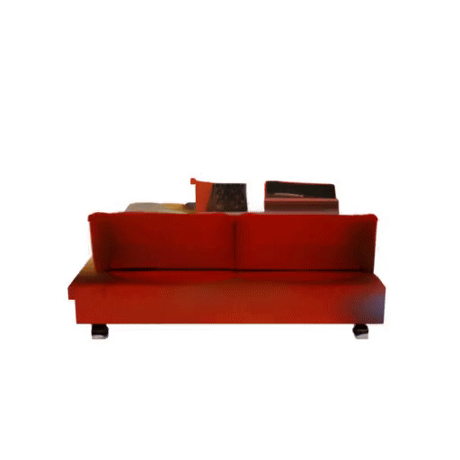
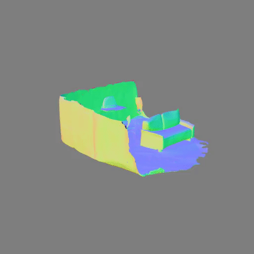
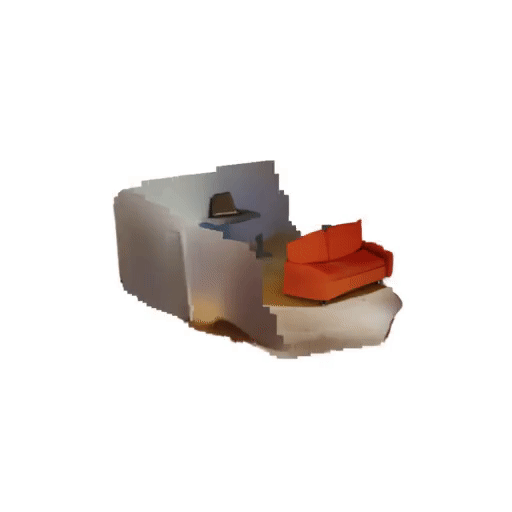
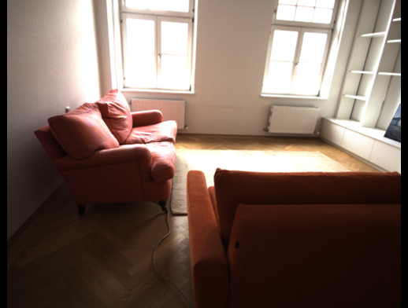
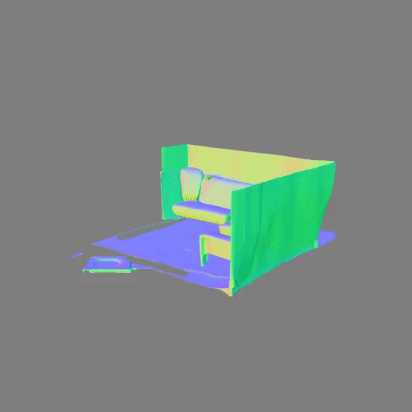
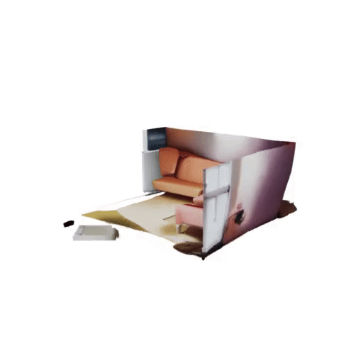
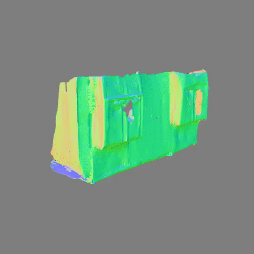
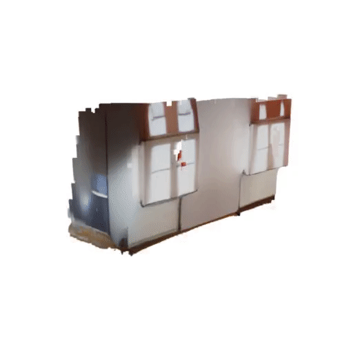
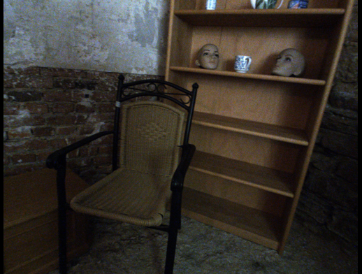
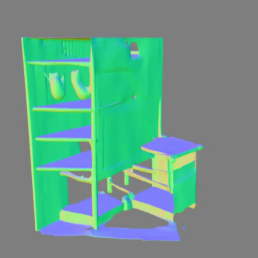
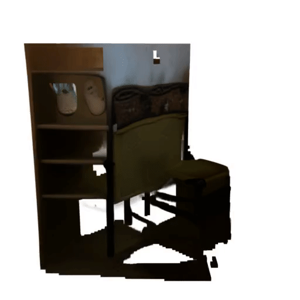
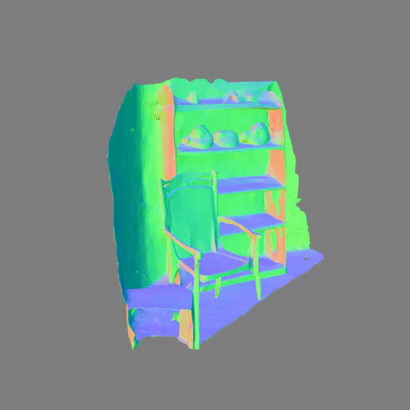
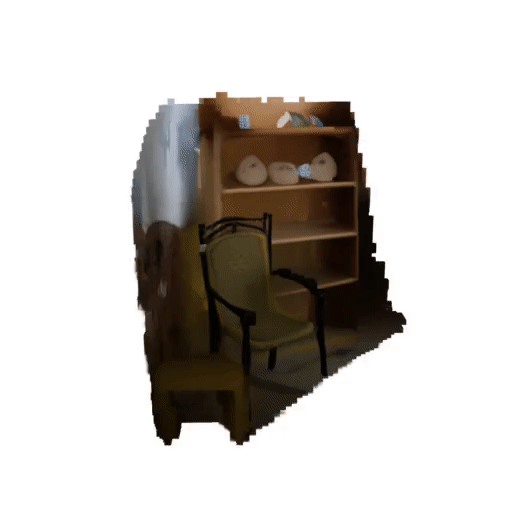
We build on prior advances in multi-view 3D reconstruction, global scene representations, and diffusion-based generative models. NOVA3R complements pixel-aligned methods by learning a view-agnostic scene embedding that supports complete geometry recovery and reduces overlap artifacts. Here are some related works that inspired our approach:
@inproceedings{chen2026nova3r,
title={NOVA3R: Non-pixel-aligned Visual Transformer for Amodal 3D Reconstruction},
author={Chen, Weirong and Zheng, Chuanxia and Zhang, Ganlin and Vedaldi, Andrea and Cremers, Daniel},
booktitle={The Fourteenth International Conference on Learning Representations},
year={2026}
}